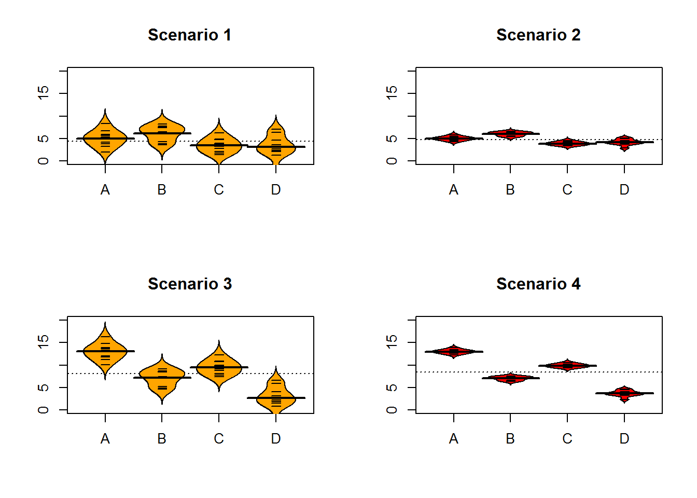

Chapter 3 One-Way ANOVA
In Chapter 2, tools for comparing the means of two groups were considered. More generally, these methods are used for a quantitative response and a categorical explanatory variable (group) which had two and only two levels. The full prisoner rating data set actually contained three groups (Figure 3.1 with Beautiful, Average, and Unattractive rated pictures randomly assigned to the subjects for sentence ratings. In a situation with more than two groups, we have two choices. First, we could rely on our two group comparisons, performing tests for every possible pair (Beautiful vsAverage, Beautiful vs Unattractive, and Average vs Unattractive). We spent Chapter 2 doing inferences for differences between Average and Unattractive. The other two comparisons would lead us to initially end up with three p-values and no direct answer about our initial question of interest – is there some overall difference in the average sentences provided across the groups? In this chapter, we will learn a new method, called Analysis of Variance, or One-Way ANOVA since there is just one31 grouping variable. After we perform our One-Way ANOVA test for overall evidence of a difference, we will revisit the comparisons similar to those considered in Chapter 2 to get more details on specific differences among all the pairs of groups – what we call pair-wise comparisons. An issue is created when you perform many tests simultaneously and we will augment our previous methods with an adjusted method for pairwise comparisons to make our results valid called Tukey’s Honest Significant Difference.
To make this more concrete, we return to the original MockJury data, making side-by-side boxplots and beanplots (Figure 3.1 as well summarizing the sentences for the three groups using favstats.
require(heplots)
require(mosaic)
data(MockJury)
par(mfrow=c(1,2))
boxplot(Years~Attr,data=MockJury)
require(beanplot)
beanplot(Years~Attr,data=MockJury,log="",col="bisque",method="jitter")Figure 3.1: Boxplot and beanplot of the sentences (years) for the three treatment groups.
favstats(Years~Attr,data=MockJury)## Attr min Q1 median Q3 max mean sd n missing
## 1 Beautiful 1 2 3 6.5 15 4.333333 3.405362 39 0
## 2 Average 1 2 3 5.0 12 3.973684 2.823519 38 0
## 3 Unattractive 1 2 5 10.0 15 5.810811 4.364235 37 0There are slight differences in the sample sizes in the three groups with 37 Unattractive, 38 Average and 39 Beautiful group responses, providing a data set has a total sample size of \(N=114\). The Beautiful and Average groups do not appear to be very different with means of 4.33 and 3.97 years. In Chapter 2, we found moderate evidence regarding the difference in Averageand Unattractive. It is less clear whether we might find evidence of a difference between Beautiful and Unattractive groups since we are comparing means of 5.81 and 4.33 years. All the distributions appear to be right skewed with relatively similar shapes. The variability in Average and Unattractive groups seems like it could be slightly different leading to an overall concern of whether the variability is the same in all the groups.
3.1 Situation
Weintroduced the statistical model \(y_{ij} = \mu_j+\epsilon_j\) in Chapter 2 for the situation with \(j = 1 \text{ or } 2\) to denote a situation where there were two groups and, for the model that is consistent with the alternative hypothesis, the means differed. Now we have three groups and the previous model can be extended to this new situation by allowing \(j\) to be 1, 2, or 3. Now that we have more than two groups, we need to admit that what we were doing in Chapter 2 was actually fitting what is called a linear model. The linear model assumes that the responses follow a normal distribution with the linear model defining the mean, all observations have the same variance, and the parameters for the mean in the model enter linearly. This last condition is hard to explain at this level of material – it is sufficient to know that there models where the parameters enter the model nonlinearly and that they are beyond the scope of this course. The result of this constraint is that we will be able to use the same general modeling framework for the methods introduced in Chapters 3, 4, 6, 7, and 8.
As in Chapter 2, we have a null hypothesis that defines a situation (and model) where all the groups have the same mean. Specifically, the null hypothesis in the general situation with \(J\) groups (\(J\ge 2\)) is to have all the true group means equal,
\[H_0:\mu_1 = \ldots \mu_J.\]
This defines a model where all the groups have the same mean so it can be defined in terms of a single mean, \(\mu\), for the \(i^{th}\) observation from the \(j^{th}\) group as \(y_{ij} = \mu+\epsilon_{ij}\). This is not the model that most researchers want to be the final description of their study as it implies no difference in the groups. There is more caution required to specify the alternative hypothesis with more than two groups. The alternative hypothesis needs to be the logical negation of this null hypothesis of all groups having equal means; to make the null hypothesis false, we only need one group to differ but more than one group could differ from the others. Essentially, there are many ways to “violate” the null hypothesis so we choose some delicate wording for the alternative hypothesis when there are more than 2 groups. Specifically, we state the alternative as
\[H_A: \text{ Not all } \mu_j \text{ are equal}\]
or, in words, at least one of the true means differs among the J groups. You will be attracted to trying to say that all means are different in the alternative but we do not put this strict a requirement in place to reject the null hypothesis. The alternative model allows all the true group means to differ but does require that they differ with
\[{\color{red}{\mu_j}}+\epsilon_{ij}.\]
This linear model states that the response for the \(i^{th}\) observation in the \(j^{th}\) group, \(\mathbf{y_{ij}}\), is modeled with a group \(j\) (\(j=1, \ldots, J\)) population mean, \(\mu_j\), and a random error for each subject in each group \(\epsilon_{ij}\), that we assume follows a normal distribution and that all the random errors have the same variance, \(\sigma^2\). We can write the assumption aboutthe random errors, often called the normality assumption, as \(\epsilon_{ij} \sim N(0,\sigma^2)\). There is a second way to write out this model that allows extension to more complex models discussed below, so we need a name for this version of the model. The model written in terms of the \({\color{red}{\mu_j}}\text{'s}\) is called the cell means model and is the easier version of this model to understand.
One of the reasons we learned about beanplots is that it helps us visually consider all the aspects of this model. In the right panel of Figure 3.1, we can see the wider, bold horizontal lines that provide the estimated group means. The bigger the differences in the sample means, the more likely we are to find evidence against the null hypothesis. You can also see the null model on the plot that assumes all the groups have the same as displayed in the dashed horizontal line at 4.7 years (the R code below shows the overall mean of Years is 4.7). While the hypotheses focus on the means, the model also contains assumptions about the distribution of the responses – specifically that the distributions are normal and that all the groups have the same variability. As discussed previously, it appears that the distributions are right skewed and the variability might not be the same for all the groups. The boxplot provides the information about the skew and variability but since it doesn’t display the means it is not directly related to the linear model and hypotheses we are considering.
mean(MockJury$Years)## [1] 4.692982There is a second way to write out the One-Way ANOVA model that provides a framework for extensions to more complex models described in Chapter 4 and beyond. The other parameterization (way of writing out or defining) of the model is called the reference-coded model since it writes out the model in terms of a
baseline group and deviations from that baseline or reference level. The reference-coded model for the \(i^{th}\) subject in the \(j^{th}\) group is \(y_{ij} =\color{purple}{\boldsymbol{\alpha + \tau_j}}+\epsilon_{ij}\) where \(\color{purple}{\boldsymbol{\alpha}}\) (alpha) is the true mean for the baseline group (first alphabetically) and the \(\color{purple}{\boldsymbol{\tau_j}}\) (tau \(j\)) are the deviations from the baseline group for group \(j\). The deviation for the baseline group, \(\color{purple}{\boldsymbol{\tau_1}}\), is always set to 0 so there are really just deviations for groups 2 through \(J\). The equivalence between the two models can be seen by considering the mean for the first, second, and \(J^{th}\) groups in both models:
| Cell means: | Reference-coded: | |
|---|---|---|
| Group 1: | \({\color{red}{\mu_1}}\) | \({\color{purple}{\boldsymbol{\alpha}}}\) |
| Group 2: | \({\color{red}{\mu_2}}\) | \({\color{red}{\boldsymbol{\tau_2}}}\) |
| \(\ldots\) | \(\ldots\) | \(\ldots\) |
| Group \(J\): | \({\color{red}{\mu_J}}\) | \({\color{purple}{\boldsymbol{\tau_J}}}\) |
The hypotheses for the reference-coded model are similar to those in the cell-means coding except that they are defined in terms of the deviations, \({\color{purple}{\boldsymbol{\tau_j}}}\). The null hypothesis is that there is no deviation from the baseline for any group – that all the \({\color{purple}{\boldsymbol{\tau_j\text{'s}}}}=0\),
\[\boldsymbol{H_0: \tau_2=\ldots=\tau_J=0}.\]
The alternative hypothesis is that at least one of the deviations is not 0,
\[\boldsymbol{H_A:} \textbf{ Not all } \boldsymbol{\tau_j} \textbf{ equal } \bf{0}.\]
In this chapter, you are welcome to use either version (unless we instruct you otherwise) but we have to use the reference-coding in subsequent chapters. The next task is to learn how to use R’s linear model lm function to get estimates of the parameters in each model, but first a quick review of these new ideas:
Cell Means Version
\(H_0: {\color{red}{\mu_1=\ldots\mu_J}}\) \(H_A: {\color{red}{\text{ Not all } \mu_j \text{ equal}}}\)
Null hypothesis in words: No difference in the true means between the groups.
Null model \(y_{ij} = \mu_j+\epsilon_{ij}\)
Alternative hypothesis in words: At least one of the true means differs between the groups.
Alternative model: \(y_{ij} = \color{red}{\mu_j}+\epsilon_{ij}.\)
Reference-coded Version
\(H_0: \color{purple}{\boldsymbol{\tau_2 \ldots \tau_J = 0}}\) \(H_A: \color{purple}{\text{ Not all } \tau_j \text{ equal}}\)
Null hypothesis in words: No deviation of the true mean for any groups from the baseline group.
Null model: \(y_{ij} =\boldsymbol{\alpha} + \tau_j+\epsilon_{ij}\)
Alternative hypothesis in words: At least one of the true deviations is different from 0 or that at least one group has a different true mean than the baseline group.
Alternative model: \(y_{ij} =\color{purple}{\boldsymbol{\alpha + \tau_j}}+\epsilon_{ij}\)
In order to estimate the models discussed above, the lm function is used. If you look closely in the code for the rest of the book, any model for a quantitative response will use this function, suggesting a common thread in the most commonly used statistical models. The lm function continues to use the same format as previous functions, lm(Y~X, data=datasetname). It ends up that this code will give you the reference-coded version of the model by default (R thinks it is that important!). We want to start with the cell-means version of the model, so we have to override the standard technique and add a “-1” to the formula interface to tell R that we want to the cell-means coding. Generally, this looks like lm(Y~X-1 , data=datasetname). Once we fit a model in R, the summary function run on the model provides a useful “summary” of the model coefficients and a suite of other potentially interesting information. When fitting this version of the One-Way ANOVA model, you will find a row of output for each group relating the \(\mu_j\text{'s}\). The output contains columns for an estimate (Estimate), standard error (Std.Error), \(t\)-value (t value), and p-value (Pr(>|t|)). We’ll learn to use all the output in the following material, but for now just focus on the estimates of the parameters that the function provides that we put in bold.
lm1 <- lm(Years ~ Attr-1, data=MockJury)
summary(lm1)##
## Call:
## lm(formula = Years ~ Attr - 1, data = MockJury)
##
## Residuals:
## Min 1Q Median 3Q Max
## -4.8108 -2.8108 -0.9737 2.1892 10.6667
##
## Coefficients:
## Estimate Std. Error t value Pr(>|t|)
## AttrBeautiful 4.3333 0.5730 7.563 1.23e-11 ***
## AttrAverage 3.9737 0.5805 6.845 4.41e-10 ***
## AttrUnattractive 5.8108 0.5883 9.878 < 2e-16 ***
## ---
## Signif. codes: 0 '***' 0.001 '**' 0.01 '*' 0.05 '.' 0.1 ' ' 1
##
## Residual standard error: 3.578 on 111 degrees of freedom
## Multiple R-squared: 0.6449, Adjusted R-squared: 0.6353
## F-statistic: 67.21 on 3 and 111 DF, p-value: < 2.2e-16| Estimate | Std. Error | t value | Pr(>|t|) | |
|---|---|---|---|---|
| AttrBeautiful | 4.33 | 0.573 | 7.56 | 1.23e-11 |
| AttrAverage | 3.97 | 0.58 | 6.85 | 4.41e-10 |
| AttrUnattractive | 5.81 | 0.588 | 9.88 | 6.86e-17 |
In general, we denote estimated parameters with a hat over the parameter of interest to show that it is an estimate. For the true mean of group \(j\), \(\mu_j\), we estimate it with \(\hat{\mu}_j\), which is just the sample mean for group \(j\), \(\bar{x}_j\). The model suggests an estimate for each observation that we denote as \(\hat{y}_{ij}\) that we will also call a fitted value based on the model being considered. The three estimates are bolded in the previous output, with the same estimate used for all observations in the same group. R tries to help you to sort out which row of output corresponds to which group by appending the group name l with the variable name. Here, the variable name was Attr and the first group alphabetically was Beautiful, so R provides a row labeled AttrBeautiful with an estimate of 4.3333. The sample means from the three groups can be seen to directly match that and the other two results.
mean(Years ~ Attr, data=MockJury)## Beautiful Average Unattractive
## 4.333333 3.973684 5.810811The reference-coded version of the same model is more complicated but ends up giving the same results once we understand what it is doing. It uses a different parameterization to accomplish this so has different model output. Here is the model summary:
lm2 <- lm(Years ~ Attr, data=MockJury)
summary(lm2)##
## Call:
## lm(formula = Years ~ Attr, data = MockJury)
##
## Residuals:
## Min 1Q Median 3Q Max
## -4.8108 -2.8108 -0.9737 2.1892 10.6667
##
## Coefficients:
## Estimate Std. Error t value Pr(>|t|)
## (Intercept) 4.3333 0.5730 7.563 1.23e-11 ***
## AttrAverage -0.3596 0.8157 -0.441 0.6601
## AttrUnattractive 1.4775 0.8212 1.799 0.0747 .
## ---
## Signif. codes: 0 '***' 0.001 '**' 0.01 '*' 0.05 '.' 0.1 ' ' 1
##
## Residual standard error: 3.578 on 111 degrees of freedom
## Multiple R-squared: 0.04754, Adjusted R-squared: 0.03038
## F-statistic: 2.77 on 2 and 111 DF, p-value: 0.067The estimated model coefficients are \(\hat{\alpha} = 4.333\) years, \(\hat{tau}_2 =-0.3596\) years, \(\hat{\tau}_3=1.4775\) years where R selected group 1 for Beautiful, 2 for Average, and 3 for Unattractive. The way you can figure out the baseline group (group 1 is Beautiful here) is to see which category label is not present in the output. The baseline level is typically the first group label alphabetically, but you should always check this. Based on these definitions, there are interpretations available for each coefficient. For \(\hat{\alpha} = 4.333\) years, this is an estimate of the mean sentencing time for the Beautifulgroup. \(\hat{\tau}_2 =-0.3596\) years is the deviation of the Average group’s mean from the Beautiful groups mean (specifically, it is \(0.36\) years lower). Finally, \(\hat{\tau}_3=1.4775\) years tells us that the Unattractive group mean sentencing time is 1.48 years higher than time. These interpretations lead directly to reconstructing the estimated means for each group by combining the baseline and pertinent deviations as shown in Table 3.1.
| Group | Formula | Estimates |
|---|---|---|
| Beautiful | \(\hat{\alpha}\) | 4.3333 years |
| Average | \(\hat{\alpha}+\hat{\tau}_2\) | 4.3333 - 0.3596 = 3.974 years |
| Unattractive | \(\hat{\alpha}+\hat{\tau}_3\) | 4.3333 + 1.4775 = 5.811 years |
We can also visualize the results of our linear models using what are called term-plots or effect-plots (from the effects package; Fox, 2003) as displayed in Figure 3.2. We don’t want to use the word “effect” for these model components unless we have random assignment in the study design so we generically call these term-plots as they display terms or components from the model in hopefully useful ways to aid in model interpretation even in the presence of complicated model parameterizations. Specifically, these plots take an estimated model and show you its estimates along with 95% confidence intervals generated by the linear model. To make this plot, you need to install and load the effects package and then use plot(allEffects(...)) functions together on the lm object called lm2 that was estimated above. You can find the correspondence between the displayed means and the estimates that were constructed in Table 3.1.
require(effects)
plot(allEffects(lm2))Figure 3.2: Plot of the estimated group mean sentences from the reference-coded model for the MockJury data.
In order to assess evidence for having different means for the groups, we will compare either of the previous models (cell-means or reference-coded) to a null model based on the null hypothesis (\(H_0: \mu_1 = \ldots = \mu_J\)) which implies a model of \(\color{red}{y_{ij} = \mu_j}+\epsilon_{ij}\) in the cell-means version where \({\color{red}{\mu}}\) is a common mean for all the observations. We will call this the mean-only model since it only has a single mean in it. In the reference-coding version of the model, we have a null hypothesis that \(H_0: \tau_2 = \ldots = \tau_J = 0\), so the “mean-only” model is \(\color{purple}{y_{ij} =\boldsymbol{\alpha}+\epsilon_{ij}}\) with \(\color{purple}{\boldsymbol{\alpha}}\) having the same definition as \(\color{red}{\mu}\) for the cell means model – it forces a common value for the mean for all the groups. Moving from the reference-coded model to the mean-only model is also an example of a situation where we move from a “full” model to a “reduced” model by setting some coefficients in the “full” model to 0 and, by doing this, get a simpler or “reduced” model. Simple models can be good as they are easier to groups that suggests no difference in the groups is not a very exciting result in most, but not all, situations32. In order for R to provide results for the mean-only model, we remove the grouping variable, Attr, from the model formula and just include a “1”. The (Intercept) row of the output provides the estimate for the mean-only model as a reduced model from either the cell-means or reference-coded models when we assume that the mean is the same for all groups:
lm3 <- lm(Years ~ 1, data=MockJury)
summary(lm3)## $coefficients
## Estimate Std. Error t value Pr(>|t|)
## (Intercept) 4.692982 0.3403532 13.78857 5.765681e-26This model provides an estimate of the common mean for all observations of \(4.693 = \hat{\mu} = \hat{\alpha}\) years. This value also is the dashed, horizontal line in the beanplot in Figure 3.1. Some people call this mean-only estimate the grand or overall mean.
3.2 Linear model for One-Way ANOVA (cell-means and reference-coding)
The previous discussion showed two ways of parameterizing models for the One-Way ANOVA model and getting estimates from output but still hasn’t addressed how to assess evidence related to whether the observed differences in the means among the groups is “real”. In this section, we develop what is called the ANOVA F-test that provides a method of aggregating the differences among the means of 2 or more groups and testing our null hypothesis of no difference in the means vs the alternative. In order to develop the test, some additional notation is needed. The sample size in each group is denoted \(n_j\) and the total sample size is \(\boldsymbol{N=\Sigma n_j = n_1 + n_2 + \ldots + n_J}\) where \(\Sigma\) (capital sigma) means “add up over whatever follows”. An estimated residual (\(e_{ij}\)) is the difference between an observation, \(y_{ij}\), and the model estimate, \(\hat{y}_{ij} = \hat{\mu}_j\), for that observation, \(y_{ij}-\hat{y}_{ij} = e_{ij}\). It is basically what is left over that the mean part of the model (\(\hat{\mu}_{j}\)) does not explain. It is also a window into how “good” the model might be.
Consider the four different fake results for a situation with four groups (\(J=4\)) displayed in Figure ??. Which of the different results shows the most and least evidence of differences in the means? In trying to answer this, think about both how different the means are (obviously important) and how variable the results are around the mean. These situations were created to have the same means in Scenarios 1 and 2 as well as matching means in Scenarios 3 and 4. The variability around the means matches by shading (lighter or darker). In Scenarios 1 and 2, the differences in the means is smaller than in the other two results. But Scenario 2 should provide more evidence of what little difference in present than Scenario 1 because it has less variability around the means. The best situation for finding group differences here is Scenario 4 since it has the largest difference in the means and the least variability around those means. Our test statistic somehow needs to allow a comparison of the variability in the means to the overall variability to help us get results that reflect that Scenario 4 has the strongest evidence of a difference and Scenario 1 would have the least.

The statistic that allows the comparison of relative amounts of variation is called the ANOVA F-statistic . It is developed using sums of squares which are measures of total variation like are used in the numerator of the standard deviation (\(\Sigma_1^N(y_i-\bar{y})^2\)) that took all the observations, subtracted the mean, squared the differences, and then added up the results over all the observations to generate a measure of total variability. With multiple groups, we will focus on decomposing that total variability (Total Sums of Squares) into variability among the means (we’ll call this Explanatory Variable \(\mathbf{A}\textbf{'s}\) Sums of Squares) and variability in the residuals or errors ( Error Sums of Squares). We define each of these quantities in the One-Way ANOVA situation as follows:
\(\textbf{SS}_{\textbf{Total}} =\) Total Sums of Squares \(= \Sigma^J_{j=1}\Sigma^{n_j}_{i=1}(y_{ij}-\bar{\bar{y}})^2\)
This is the total variation in the responses around the overall or grand mean (\(\bar{\bar{y}}\), the estimated mean for all the observations and available from the mean-only model).
By summing over all \(n_j\) observations in each group, \(\Sigma^{n_j}_{i=1}(\ )\), and then adding those results up across the groups, \(\Sigma^J_{j=1}(\ )\), we accumulate the variation across all \(N\) observations.
Note: this is the residual variation if the null model is used, so there is no further decomposition possible for that model.
This is also equivalent to the numerator of the sample variance, \(\Sigma^{N}_{1}(y_{i}-\bar{y})^2\) which is what you get when you ignore the information on the potential differences in the groups.
\(\textbf{SS}_{\textbf{A}} =\) Explanatory Variable A’s Sums of Squares \(=\Sigma^J_{j=1}\Sigma^{n_j}_{i=1}(\bar{y}_{i}-\bar{\bar{y}})^2 =\Sigma^J_{j=1}n_j(\bar{y}_{i}-\bar{\bar{y}})^2\)
This is the variation in the group means around the grand mean based on the explanatory variable \(A\).
Also called sums of squares for the treatment, regression, or model.
\(\textbf{SS}_E =\) Error (Residual) Sums of Squares \(=\Sigma^J_{j=1}\Sigma^{n_j}_{i=1}(y_{ij}-\bar{y})^2 =\Sigma^J_{j=1}\Sigma^{n_j}_{i=1}(e_{ij})^2\)
This is the variation in the responses around the group means.
Also called the sums of squares for the residuals, with the second version of the formula showing that it is just the squared residuals added up across all the observations.
The possibly surprising result given the mass of notation just presented is that the total sums of squares is ALWAYS equal to the sum of explanatory variable \(A\text{'s}\) sum of squares and the error sums of squares,
\[\textbf{SS}_{\textbf{Total}} \mathbf{=} \textbf{SS}_\textbf{A} \mathbf{+} \textbf{SS}_\textbf{E}.\]
3.3 One-Way ANOVA Sums of Squares, Mean Squares, and F-test
3.4 ANOVA model diagnostics including QQ-plots
3.5 Guinea pig tooth growth One-Way ANOVA example
3.6 Multiple (pair-wise) comparisons using Tukey’s HSD and the compact letter display
3.7 Pair-wise comparisons for Prisoner Rating data
3.8 Chapter Summary
3.9 Summary of important R code
3.10 Practice problems
In Chapter 4, methods are discussed for when there are two categorical explanatory variables that is called the Two-Way ANOVA and related ANOVA tests are used in Chapter 8 for working with extensions of these models.↩
Suppose we were doing environmental monitoring and were studying asbestos levels in soils. We might be hoping that the mean-only model were reasonable to use if the groups being compared were in remediated areas and in areas known to have never been contaminated.↩